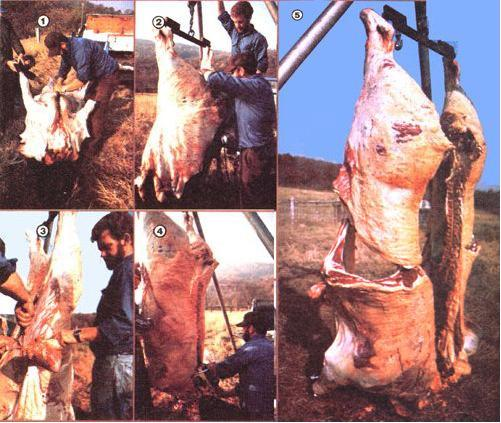
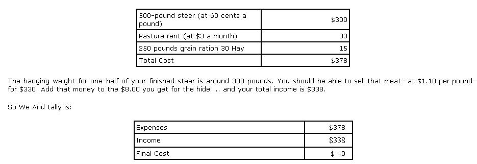

Dinny Slaughter says you can take one more step toward independence if you learn how to...
A lot of homesteading folks who have made the smart move of raising their own beef steer turn right around when " harvesting time" comes and send that ready-for-slaughtering animal off to a professional butcher. The truth is, how ever, that there's no need to pay someone else to kill, skin, and quarter your animal. Because-although the job, like most any move to greater self-sufficiency, does involve a good bit of labor and no little mess-you and a single helper can accomplish the same task yourselves ... in just a few hours.
Start by choosing a nice late fall A (Here in Virginia's Shenandoah Valley, we do our butchering-"before the flies arise"-on a November morning. If you plan to cool the carcass yourself, though, you might prefer starting the job in the early evening.) Gather your equipment-you'll need some knives, saws, a hoist, a support, and a spreader-and round up a helper. Then confine your steer and shoot it.
Take your time with the killing and do it as cleanly as possible. Fill a 12-gauge shotgun with high brass No. 4 or 5 shot, stand about 10 feet from the steer, and imagine two lines drawn from the base of each ear to the opposite eye. Then carefully aim for the spot where the lines cross ... and fire. The shot will make a silverdollar- sized hole in the animal's skull, and the beast will immediately drop to the ground.
At that point you (or your assistant) should keeping your back to the body and watching for thrashing hooves-set one foot against the animal's forelegs and force its head back as far as possible with your other foot. Then, using a sharp knife, cut along the bottom of the neck for about 10 to 15 inches-the breastbone forward-and make the incision deep enough to expose the wind-pipe without piercing it. Next, insert the knife to one side of the windpipe (with the back of the blade against the breastbone) and press the point-toward the spine-to a depth of four inches or so ... to cut the carotid arteries and jugular veins.
After the carcass has bled as much as it will, drag it to a clean area to be skinned. (For obvious health reasons, cleanliness is essential during this entire operation.) Prop the animal on its back, then start your skinning cuts by slicing the hide around each foot and making a long slit down the inside of each leg. Complete these incisions with one long center cut-down the middle of the body-from the beef's anus to its throat. Then use your knife to slice through any membranes and peel the skin back off the body. Let gravity help with as much of the work as possible.
This is also the time-while you've got the carcass on its back-to cut through the brisket. Use a hacksaw or handsaw, and avoid slicing into the internal organs. The same tool can then be employed to remove all four feet just above the ankles.
Your next job will be to suspend the animal ... so you can finish skinning the beef and clean out its internal organs. Cut large slits in each of the steer's two rear legs, between the Achilles tendon and the main bone ... but don't cut the tendon! Insert a crosspiece of strong wood or pipe through the two gashes (we we a solid steel "spreader" with hooks on the ends). Then fasten is beef "tree" to your hoisting line and run that cable over a very sturdy tree limb (or through a metal ring suspended from a large tripod).
Attach the free end of line to a winch and start winding. Each crank of the come-along will raise the thousand-pound carcass only a fraction of an inch ... but before long you'll have hoistedeasilythe entire beef up in the air.
One worker should now skin the hide off the back side, while the other makes the main body cut from the anus, down the center of the belly, to the previously sawed brisket. To begin this major incision, slice around the rear opening-until that canal is free-and then seal off the end with string. Remove the tail at its base and start cutting the body wall membranes that hold the intestines and other organs. The pull of gravity will help clean those innards out. (Be sure to trim off the large globs of fat positioned along the backbone.) Separate the heart and liver from the other organs, slice open the heart so that clotted blood can escape, and carefully cut the bitter gallbladder sack from the liver. Immerse these two major organs in a bucket of water to cool them
At this point, the skinner should have finished his or her job. Roll the hide up carefully and save it (the leather covering is worth about $8.00 to your local raw fur buyer). Next, cut off the head, pry open the mouth, and slice between the lower and upper jaws to remove the tongue. (Use an old knife when working in the steer's mouth ... because the necessary scraping against bones and teeth will surely dull the blade.)
Now take a short breather and admire your handiwork. An entire beef carcass is hanging right before your eyes. The only major chore left is to separate the meat into two parts by sawing straight down the backbone ... from the tail to the neck. You can do this job with your hacksaw and a whole lot of arm power. Or you might want to take the easy way out (as we do) and use a chain saw. That's right, an ordinary tree-felling chain saw. (Be sure, of course, to first remove ALL the oil from the machine's reservoir and blade.)
Here's the technique: The saw's operator works from the backside of the carcass, while his partner stands on the opposite side and guides the sawyer-using hand signals-to ensure a straight cut. (A third person-if the extra help is available- should steady the swinging meat.) After that brief operation is over, hose-or dousethe carcass with cold water, wipe it clean with a cloth, and let it drain.
You're now ready to back your truck under the two beef halves and load the meat. Make handsawed cuts-just above the bottom ribs-and the two front quarters will drop neatly &to the rear of your vehicle. Then simply lower the winch and unhook the hindquarters.
You're done ... you've just killed and skinned your beef. The meat will, of course, still have to be processed ... and if you want to tackle that jobjointing and preserving meal-sized pieces of beef-take a look at the shorter sidebar that accompanies this article for several good sources of information.
Because I kill and skin my own beef I've been able to supply my family with meat at a cost of only penni es per pound. Impossible, you say? Not it you do things my way.
Here's Me scoop: In-late November, buy a good 500- to 600-pound steer at the market price. Pasture the animal until the following October. On the first day of that month, pen We beast up, and fatten it for 30 days on a diet of grain ration plus good-quality hay. Then kill and skin the steer and sell one-half of the carcass at market price. Use the money received from that sale to purchase another steer for next year ... and keep the "leftover" side of beef for yourself!
You've got an approximately 300- side of beef that cost you only $40 ... or a piddling 13 cents a pound! Not only that, you also have $338 in cash to invest in next year's steer ... so no major investment comes out of your pocket after the f irst year!
I know, I know ... you think this sounds too good to be true, that I must be juggling figures or something.
But I'm not. It works.
More information about beef processing can be found in Wilbur F. Eastman, Jr.'s The Canning, Freezing, Cur ing Smoking of Meat, Fish Game ($5.95, Garden Way Publishing Company) and Butchering, Processing and Preservation of Meat by Frank G. Ashbrook ($4.95, Van Nostrand Reinhold Company). Ashbrook's 318-page book-the more comprehensive of the two -covers everything Rom killing to "keeping". Eastman's 202-page guide focuses on the various preservation techniques. Both should be available Rom any good bookstore or-for We listed prices plus 95 cents shipping and handling-from Mother's Bookshelf, P.O. Box 70, Hendersonville, North Card ina 28739.
And, of course, Morton Salt's "Complete Guide to Home Meat Curing"-with detailed processing instructions-was excerpted in MOTHER NO. 20 ... which is available for $3.00 plus $1.00 shipping and handling from THE Mother Earth News(restricted)", P.O. Box 70, Hendersonville, North Carolina 28739.
|
[1] Slit the hide down the belly ... [2] then suspend the carcass to finish skinning the animal and to remove the viscera. [3] Separate the heart and liver from the other organs and cool 'em in a bucket of water. [4] A chain saw makes short work of cutting your beef in half ... straight down the backbone from tail to neck. [5] Use a handsaw just above the bottom ribs, and there it is: your skinned and quartered steer. |
 |
 |